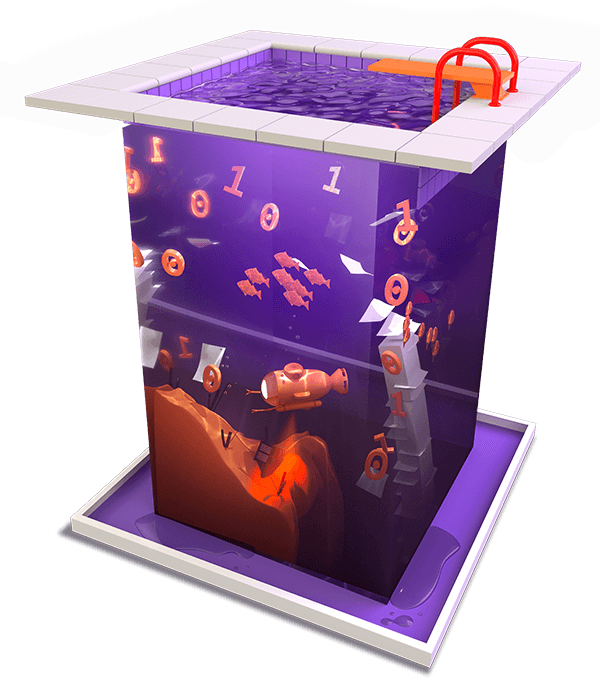

Big data is going to help solve big problems: how we grow food; how we deliver supplies to those in need; how we cure disease. But first, we need to figure out how to handle it.
Modern life is filled with connected gadgets. We now produce more data in a day than we did over thousands of years. Kenneth Cukier explains how data has changed, and how it's beginning to change us. Dr. Ellen Grant tells us how Boston Children's Hospital is using open source software to transform mountains of data into individualized treatments. And Sage Weil shares how Ceph's scalable and resilient cloud storage helps us manage the data flood.
Gathering information is key to understanding the world around us. Big data is helping us expand our never ending mission of discovery.
00:03 - Saron Yitbarek
If you take all human data created from the dawn of time to 2003, you'd get about five million gigabytes of data. How many gigabytes of data did we create yesterday?
00:15 - Poll response 1
Oh gosh, 100,000.
00:21 -Poll response 2
Like five million gigabytes.
00:23 - Poll response 3
How many gigabytes of data did we create yesterday in one day? 10 million gigabytes?
00:31 - Poll response 4
I would say, I don't know, like two million maybe?
00:36 - Poll response 5
Maybe a million gigabytes in a day?
00:40 - Saron Yitbarek
Answer? More than 2.5 billion.
00:44 - Poll response 1
Oh wow.
00:44 - Poll response 2
2.5 billion?
00:45 - Poll response 3
So, we already beat the world record.
00:45 - Poll response 4
That's a lot of gigabytes.
00:45 - Poll response 5
That's a lot of data right there. I don't believe it.
00:52 - Saron Yitbarek
In 2016, our annual data traffic online passed one zetabyte for the first time. That's one sextillion bites, if it helps. Okay, got that number in your head? Now triple it, because that's how much data we'll have by 2021.
01:10 - Saron Yitbarek
I know, the brain wasn't made to think in zetabytes, but just hold onto this one little fact for a second. Our IP traffic will triple in five years. It's a data flood and we're in the middle of it.
01:24 - Saron Yitbarek
That last minute that went by, people sent 16 million text messages and in the time it took me to say that sentence, Google processed 200,000 searches.
01:37 - Saron Yitbarek
Hidden inside that data flood are patterns, answers, and secrets that can massively improve our lives if we can just keep ourselves standing upright when the flood comes in.
01:50 - Saron Yitbarek
I'm Saron Yitbarek and this is Command Line Heroes, an original podcast from Red Hat. The tidal waves are on the horizon. This is episode 6 of season 2, the data flood.
02:17 - Saron Yitbarek
How do we handle such enormous amounts of data? How will we make use of that data once it's captured? Big data is going to solve some of our most complicated problems:
02:29 - Saron Yitbarek
How we manage traffic. How we grow food. How we deliver supplies to those in need. But only once we figure out how to work with all that data, how to process it, and at breakneck speed.
02:43 - Kenneth Cukier
By having more data, we can drill down into these sub-groups, these particulars, and these details in ways that we never could before.
02:53 - Saron Yitbarek
Kenneth Cukier is a senior editor at The Economist and he's also the Saron Yitbarek of their tech podcast called Babbage.
03:01 - Kenneth Cukier
It's not to say that we couldn't collect the data before. We could, it just was really, really expensive. The real revolution is that we can collect this data very easily.
03:10 - Kenneth Cukier
It's very inexpensive and the processing is super simple because it's all done by a computer. This has become the huge revolution of our era and it is probably the most defining aspect of modern life and will be for the next several decades, if not the next century. That's why big data's such a big deal.
03:33 - Saron Yitbarek
A little history can remind us how radical that change has been. Think about it, 4,000 years ago, we were scratching all our data into dried slabs of mud.
03:46 - Kenneth Cukier
These clay disks were heavy. The data that is imprinted in them once they're baked can't be changed. All of these features of how information was processed, stored, transferred, created has changed, right?
04:04 - Saron Yitbarek
Changed big time. Around the year 1450, you get the first information revolution with the invention of the printing press. And today, we have our own revolution.
04:16 - Kenneth Cukier
It's lightweight. It can be changed super simply because we can just use the delete key and change the instantiation of the information that we have in whether it's the magnetic tape or in the transition of the electronic transistors and the processors that we have. We can transport it at the speed of light, unlike say a clay disk that you have to carry.
04:37 - Saron Yitbarek
The printing press levelled up our understanding of things with the 15th-century flood of data that ushered in the enlightenment.
04:45 - Saron Yitbarek
Today, big data can level us up again. But only if we figure out how to take advantage of all that data. Only if we build the dams and the turbines that will put the flood to work.
05:00 - Kenneth Cukier
There is a huge gap between what is possible and what companies and individuals and organizations are doing. That's really important because we could already see that there's this latent value in the data and that the cost of collecting, storing, and processing the data has really dropped down considerably to where it was, of course, a hundred years ago but even just ten years ago.
05:22 - Kenneth Cukier
That's really exciting. But the problem is that, culturally, and in our organizational processes and even in the budgets that our CFOs and our CIOs allot to data, we're not there yet.
05:35 - Saron Yitbarek
Super frustrating when you think about it. Enlightenment knocking at the door and nobody's answering. Part of the reason we're not answering though is that, well, who's actually behind the door? What's all this data gonna deliver?
05:51 - Saron Yitbarek
Kenneth figures the newness of big data keeps some companies from taking that leap.
05:56 - Kenneth Cukier
What is the value of the data once you collect a lot of it? The most honest answer is if you think you know, you're a fool. Because you can never identify today all the ways with which we're going to put the data to uses tomorrow.
06:12 - Kenneth Cukier
The most important thing is to have the data and to have an open mind in all the ways that it can be used.
06:18 - Saron Yitbarek
What Kenneth’s envisioning if we get big data right, is a wholesale transformation of our attitudes towards what's possible. A world where everybody, not just data scientists, can see the potential and gain insight.
06:33 - Kenneth Cukier
By understanding that the world is one in which we can collect empirical evidence about it in order to understand it, and in order to change it, and improve it, and that improvements can happen in an automated fashion, we will see the world in a different way, and I think that's the really interesting change that's happening now culturally or psychologically around the world with policy makers and business people and Starbucks baristas.
07:00 - Kenneth Cukier
Everyone in all walks of life sort of have the data gene. They got it. They've sort of gotten the inoculation and now, everywhere they look, they think in a data mindset.
07:15 - Saron Yitbarek
Kenneth Cukier told us a quick story to illustrate the power of that new data mindset. Some researchers at Microsoft began thinking about pancreatic cancer.
07:27 - Saron Yitbarek
People often find out about pancreatic cancer too late and early detection could save lives. So, the researchers began asking before these patients start searching for information on pancreatic cancer, what were they searching for in the previous few months? And in the previous years.
07:46 - Saron Yitbarek
They began looking for clues buried inside all that search data. They began looking for patterns.
07:54 - Kenneth Cukier
They struck pay dirt. They saw that they can identify patterns in the search terms leading up to the moment where people started searching for pancreatic cancer that predicted very accurately that people had pancreatic cancer.
08:09 - Kenneth Cukier
The lesson here is that by using their imagination in terms of the latent knowledge inside of data, they can save lives. All they need now to do is to find a way to instrument through policy this finding, so that when people are searching for these terms, they can intervene in a subtle way to say, "You might wanna go to a healthcare clinic and get this checked out."
08:29 - Kenneth Cukier
If they start doing that, people's lives will be saved.
08:37 - Saron Yitbarek
What the researchers stumbled upon is a new form of cancer screening, a process that could alert patients month earlier. Making use of data isn't just a question of maximizing profits or efficiency.
08:52 - Saron Yitbarek
It's about so much more than that. Hiding in all that data are real, enormous positives for humankind. If we don't use that data, we could be cheating ourselves. It's that epic struggle to put data to work that we're focusing on next.
09:18 - Saron Yitbarek
Boston Children's Hospital at Harvard Medical School performed more than 26,000 surgeries last year. Kids walk through their doors for about a quarter million radiological exams.
09:31 - Saron Yitbarek
The staff is doing incredible work, but there's a huge roadblock standing in their way.
09:37 - Ellen Grant
A lot of the problems that we have in a hospital environment, especially as a physician, is how to get access to the data.
09:45 - Saron Yitbarek
That's Dr. Ellen Grant. She's a pediatric neuroradiologist at Boston Children's and she depends on accessing data and analyzing medical images.
09:56 - Ellen Grant
It's not simple to get access into say a pax archive where the images are stored to do additional data analysis unless you set up an environment. That's not easy to do when you're in a reading room where there are just standard hospital PCs provided.
10:14 - Ellen Grant
There's a barrier to actually get to the data.
10:17 - Saron Yitbarek
Hospitals actually dump a lot of their data because they can't afford to store it. So, that data's just lost. Radiologists like Dr. Grant may have been the first group of doctors to feel the frustration of data overload.
10:33 - Saron Yitbarek
When they went digital, they began creating enormous amounts of data and that quickly became impossible to handle.
10:41 - Ellen Grant
I, as a clinician, in the reading room wanted to be able to do all the fancy analysis that could be done in a research environment. But there's no way to easily get images off of the packs and get them to some place where the analysis could be done and get them back into my hands.
10:59 - Saron Yitbarek
Packs by the way are what hospitals call the data banks that store their images. Dr. Grant knew there were tools that could make those packs of images more functional, but costs were prohibitive.
11:12 - Ellen Grant
As we're entering into this era of machine learning and AI, there's more of that gonna happen that we need these larger computational resources to really start to do the large database analysis we wanna do.
11:27 - Saron Yitbarek
The data's been piling up, but not so much the processing. On premise data processing would be out of reach. And elaborate, expensive supercomputers aren't an option for hospitals.
11:41 - Saron Yitbarek
Dr. Grant became deeply frustrated.
11:44 - Ellen Grant
Can't we figure out a better way for me to just get data over here, analyze it, get it back so I can do it at the consul where I'm interpreting clinical images cause I wanna have that data there and analyzed there quickly.
11:56 - Ellen Grant
I don't wanna have to move to different computers and memorize all this line code when that's not my job. My job is trying to understand very complex medical diseases and keep all those facts in my head.
12:10 - Ellen Grant
I wanted to keep my focus on where my skill set was but exploit what is emerging in the computational side without having to dive that deep into it.
12:21 - Saron Yitbarek
What Dr. Grant and radiologists around the world needed was a way to click on imagery, run detailed analysis, and have it all happen on the cloud so the hospital didn't have to build their own server farm and didn't have to turn the medical staff into programmers.
12:40 - Saron Yitbarek
They needed a way to make their data save all the lives it could and so, that's exactly what Dr. Grant and a few command line heroes decided to build.
12:55 - Saron Yitbarek
Dr. Grant's team at Boston Children's Hospital worked with Red Hat and the Massachusetts Open Cloud (MOC). More on the MOC a little later. First though, here's Rudolph Pienaar, a biomedical engineer at the hospital describing their solution. It's an open source, container-based imaging platform.
13:15 - Saron Yitbarek
It's all run on the cloud, too. So you're not limited by the computing power at the hospital itself. They call their creation ChRIS.
13:24 - Rudolph Pienaar
There's a backend database that's a Django Python machine really and that keeps track of users. It keeps track of the data they've processed. It keeps track of results.
13:35 - Rudolph Pienaar
Then there are a whole bunch of constellation of services around this database that all exist as their own instances in containers. These deal with communicating with hospital resources like databases. They deal with the intricacies of pulling data from these resources and then pushing them out to other services that exist on a cloud or another lab or whatever it might be. On the place where data is computed, there's all these services like Kubernetes, the schedule, the actual analysis of the data that you want to be doing. Then, pulling it back again.
14:11 - Saron Yitbarek
For Dr. Grant, the ChRIS imaging platform is a way to make data come to life. More than that, it's a way for data to make her a better doctor.
14:21 - Ellen Grant
What makes a person a good physician is the experience they've had over a lifetime of practicing. But if I can kind of embody that into the data analysis and access more of that information, we just all know more and can combine the information better.
14:39 - Ellen Grant
For example, I have a perception of what a certain pattern of injury looks like in a certain patient population built on my Gestalt understanding from the memories that I have.
14:52 - Ellen Grant
I can now actually create probability maps of their distributions and inform everybody based on real data, or I can look for similar patients who had similar patterns and say what works best with them when they were treated to try to get closer to precision medicine.
15:10 - Ellen Grant
Integrating the large amount of data and trying to explore our past knowledge and to best inform how to treat any individual the best you can.
15:21 - Saron Yitbarek
What does that mean for the children that are brought to the hospital? Dr. Grant says the ChRIS platform delivers more targeted diagnoses and more individualized care.
15:31 - Ellen Grant
If we have more complex databases, we can understand complex interactions better and hopefully guide individual patients better. I think of ChRIS basically as my portal into multiple accessory lobes so I can be a lot smarter than I can on my own, ‘cause I cannot keep all this data in my brain at one time.
15:53 - Saron Yitbarek
When the stakes are this high, we wanna push past the limits of the human brain. Here's Máirín Duffy. She's a designer on the Red Hat team that makes ChRIS happen and she knows from personal experience what's at stake.
16:15 - Máirín Duffy
My father had a stroke, so I've been there sort of in the patient's family side of waiting for medical technology, ‘cause when someone has a stroke, they bring you in the hospital and they have to figure out what type of stroke it is. Based on the type, there's different treatments.
16:31 - Máirín Duffy
If you give the wrong treatment, then really bad things can happen. So, the faster you can get the patient in for an MRI, the faster you can interpret the results in that situation. The faster you can potentially save their life.
16:43 - Máirín Duffy
Just think about just the fact of getting that image processing pushed out of the cloud, parallelized, make it so much faster. So instead of being hours or days, it's minutes.
16:55 - Saron Yitbarek
Medicine may be arriving at a new inflection point. One not driven by pharmacology, but by computer science. Also, think about the scalability of something like ChRIS.
17:08 - Saron Yitbarek
You could have doctors in developing countries benefiting from the expertise and data sets at Boston Children's Hospital. Anybody with cell service could access web-based computing and data that might save lives.
17:24 - Saron Yitbarek
Besides medicine, lots of other fields could be witnessing a similar inflection point. But only if they figure out how to make their data collections sing. To do that, they need to discover a whole new territory of computing.
17:46 - Saron Yitbarek
All around the world, we're learning to make use of our data. Diverting those data floods towards our own goals, like at Boston Children's Hospital.
17:56 - Saron Yitbarek
In other words, we're processing that data. But we can only do that because a new generation of cloud-based computing makes the processing possible.
18:11 - Saron Yitbarek
For platforms like ChRIS, a key ingredient is that cloud-based computing is a new kind of storage. Remember that lots of hospitals throw out the data they gather because they literally can't hold it all.
18:25 - Saron Yitbarek
That's what I wanna focus on as a last piece of the data flood puzzle. The storage solution. For ChRIS, the storage solution came in the form of an open source project called Ceph. The Massachusetts Open Cloud, which ChRIS uses, depends on Ceph.
18:45 - Saron Yitbarek
So, I got chatting with its creator, Sage Weil, to learn more about how places like Boston Children's can process enormous amounts of data in lightning time. Here's my conversation with Sage. I think a great first question is what is Ceph and what does it do?
19:05 - Sage Weil
Sure. Ceph is a software-defined storage system that allows you to provide a reliable storage service, providing various protocols across unreliable hardware.
19:14 - Sage Weil
It's designed from the ground up to be scalable, so you can have very, very large storage systems, very large data sets and you can make them available and tolerate hardware failures and network failures and so on without compromising availability.
19:29 - Saron Yitbarek
Nowadays, there's just so much data.
19:31 - Sage Weil
Yes.
19:33 - Saron Yitbarek
So much consumption. There's just so much to get a handle on. Do you feel like the timing of it was part of the need for the solution?
19:39 - Sage Weil
Yes, definitely. At the time, it just seemed painfully obvious that there's this huge gap in the industry. There was no open source solution that would address the scalable storage problem. So it was obvious that we needed to build something.
19:53 - Saron Yitbarek
When we're thinking about the amount of data we're dealing with on a daily basis and the fact that it's only growing, it's only getting bigger and harder to manage, what do you see that's being worked on today that will maybe address this growing need?
20:09 - Sage Weil
I think there are sort of several pieces of it. The first thing is that there's incredible amount of data being generated, of course, so you need scalable systems that can scale not just in the amount of hardware and data that you're storing but also have a sort of fixed or nearly fixed operational overhead.
20:25 - Saron Yitbarek
Mm-hmm (affirmative).
20:26 - Sage Weil
You don't wanna pay another person per 10 petabytes or something like that. They have to be operationally scalable, I guess would be the way to put it.
20:33 - Saron Yitbarek
Yeah.
20:35 - Sage Weil
That's part of it. I think also the way that people interact with storage is changing as well. In the beginning, it was all file storage and then we have block storage for VMs, object storage is sort of, I think, a critical trend in the industry.
20:51 - Sage Weil
I think really the next phase of this is not so much around just providing an object storage endpoint and being able to store data in one cluster, but really taking this sort of the level up and having clusters of clusters, geographically distributed mesh of cloud footprints or private datacenter footprints where data is stored and being able to manage the data that's distributed across those.
21:13 - Sage Weil
Maybe you write the data today in one location, you tier it off to somewhere else over time because it's cheaper, or it's closer, or the data's older, and you need to move it to a lower-performance, higher-capacity tier for pricing reasons.
21:27 - Sage Weil
Dealing with things like compliance so that when you ingest data in one, in Europe, it has to stay within certain political boundaries in order to comply with regulation.
21:39 - Sage Weil
In certain industries, you have things like HIPAA that restricts the way that data's moved around. I think as modern IT organizations are increasingly spread across lots of different datacenters and lots of public clouds and their own private cloud infrastructure, being able to manage all this data and automate that management is becoming increasingly important.
21:58 - Saron Yitbarek
When you think about how we're going to manage and store data in the future, and process data in the future, how does open source play a role in that? You mentioned that you wanted to create an open source solution because of your personal philosophy and your strong feelings on free and open software.
22:16 - Saron Yitbarek
How do you see open source affecting other solutions in the future?
22:21 - Sage Weil
I think that, particularly in the infrastructure space, solutions are converging towards open source. I think the reason for that is there are high cost pressures in the infrastructure space and particularly for people building software-as-a-service or cloud services, it's important that they keep their infrastructure very cheap and open source is obviously a very good way to do that from their perspective.
22:48 - Sage Weil
I think the second reason is more of a, I think, a social reason and that it's such a fast-moving field where you have new tools, new frameworks, new protocols, new ways of thinking about data and there's so much innovation and change happening in that space and so many different products and projects that are interacting, that it's very hard to do that in a way that is sort of based on the traditional model, where you have different companies having partnership agreements and co-development or whatever.
23:20 - Sage Weil
Open source removes all of that friction.
23:28 - Saron Yitbarek
Sage Weil is a senior consulting engineer at Red Hat and the Ceph project lead. I'm gonna circle back to Kenneth Cukier from The Economist so we can zoom out a bit, because I want us to remember that vision he had about our relationship with data and how we've progressed from clay tablets to the printing press to cloud-based wonders like the one Sage built.
23:55 - Kenneth Cukier
This is about human progress and it is about how we can understand the world and the empirical evidence of the world better to improve the world. It is the same mission of progress that humans have always been on.
24:08 - Saron Yitbarek
The mission never ends. But, in the meantime, learning to process the data we've gathered and put that flood to work, that's an open source mission for a whole generation. We're ending our data journey with a quick stop at the Oak Ridge National Laboratory in Tennessee. It's home to Summit, the world's fastest supercomputer or at least fastest as of 2018.
24:43 - Saron Yitbarek
This machine processes 200,000 trillion calculations per second. That's 200 petaflops, if you're counting. Processing speed like that isn't practical for hospitals or banks or all the thousands of organizations that benefit from high high performance computing today.
25:04 - Saron Yitbarek
Supercomputers like Summit are reserved more for Hadron Collider territory. But then again, we were once recording just a hundred bytes of info on clay tablets.
25:16 - Saron Yitbarek
The story of data storage and data processing is one where extraordinary feats keep becoming the new normal. One day, we might all have Summit-sized supercomputers in our pockets. Think of the answers we'll be able to search for then.
25:42 - Saron Yitbarek
Next episode, we're going serverless. Or are we? Episode 7 is all about our evolving relationship with cloud-based development. We're figuring out how much of our work we can abstract and what we might be giving up in the process.
25:58 - Saron Yitbarek
Meantime, if you wanna dive deeper into the ChRIS story, visit redhat.com/chris to learn more about how it was built and how you can contribute to the project itself.
26:12 - Saron Yitbarek
Command Line Heroes is an original podcast from Red Hat. Listen for free on Apple Podcasts, Google Podcasts, or wherever you do your thing.
26:24 - Saron Yitbarek
I'm Saron Yitbarek. Until next time, keep on coding.
Keep going
Why our big data questions require scalable, open answers
Data use is too universal for closed source solutions
Creating ChRIS
Boston Children's Hospital needed better access to their data. So they teamed up with Red Hat and the Mass Open Cloud.
File, block, or object storage?
We can store worlds of data—and how we do that matters.
Featured in this episode
Also in this episode
Get the newsletter
After each episode drops, we'll send you commentary from the Command Line Heroes team, as well as links that help you take a closer look at the topics we cover. It's as simple as that.
Presented by Red Hat
For 25 years, Red Hat has been bringing open source technologies to the enterprise. From the operating system to containers, we believe in building better technology together–and celebrating the unsung heroes who are remaking our world from the command line up.